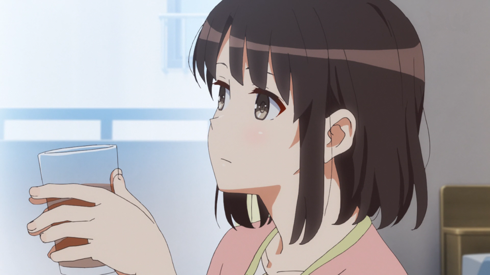

| Katou Megumi (加藤恵) dari Saenai Heroine no Sodatekata | |
|---|---|
|
Katou Megumi adalah teman sekelas Tomoya Aki, yang hampir tidak diperhatikan oleh orang lain. Di anime, dia satu kelas dengan Tomoya sejak tahun pertama mereka, tapi dia tidak pernah memperhatikannya. Saat di light novel, pada tahun pertama, Megumi bersekolah di kelas E sementara Tomoya bersekolah di kelas A. Setelah Tomoya bertemu dengannya saat pemanggilan takdir, dia menginspirasinya untuk membuat game sim kencan, menampilkan dia sebagai Pahlawan Utama. Namun, dia kecewa dengan kepribadian aslinya. |
|
|
Penampilan : Megumi adalah seorang gadis cantik dengan bob pendek berwarna coklat tua yang biasanya sudah usang tetapi cukup panjang untuk diikat menjadi ekor kuda, mata coklat tua, dan dia digambarkan memiliki "proporsi yang sempurna". Megumi biasanya terlihat mengenakan seragam sekolahnya, atau pakaian kasual, yang digambarkan Tomoya sebagai "normal". |
|
| Pengisi Suara Jepang : Kiyono Yasuno | |
| Foto | |
|  | |